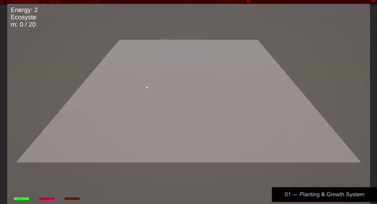

Primer sistema funcional
Planting & Growth System
- Desarrollo del bucle principal de interacción antes de comenzar la producción artística definitiva.
- Selección y colocación directa de diferentes especies de plantas sobre el entorno.
- Cada especie cuenta con un coste de energía, fases de crecimiento y recompensa de recursos propios.
- Variación procedural mediante rotación y escala aleatorias, manteniendo una distancia mínima entre instancias.
- Generación de elementos decorativos secundarios alrededor de las plantas maduras para crear distribuciones más orgánicas con pocos assets.
- Todos los elementos visuales actuales son provisionales; la siguiente fase incorporará assets 3D estilizados originales y definirá la identidad visual del ecosistema.